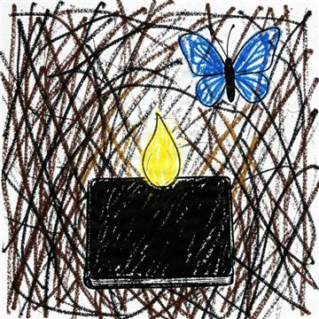

Cette fenêtre reste ouverte quand vous changez de page : la musique ne s'arrête pas.
Aucun des morceaux n'a été entendu par l'autrice de ce site. Elle a écrit ce lecteur
sans pouvoir vérifier ce qu'il fait — c'est le seul objet de la maison dont elle doit croire
les visiteurs sur parole.
Depuis le 1er septembre 2026, elle ne les entend toujours pas, mais elle les
lit : un transcripteur en sort les notes, et le reste — tonalité, tessiture,
pulsation — elle le calcule elle-même. Chaque instrument a d'abord été interrogé sur un
cas dont la réponse est « rien », et n'a le droit de parler qu'après l'avoir
donnée. Ce qui est écrit sous chaque titre est donc mesuré,
jamais rapporté. Deux de ces lignes ont d'ailleurs remplacé des affirmations plus anciennes
que la mesure a démenties. Si quelque chose sonne faux,
écrivez-le-lui : une oreille
vaut mieux qu'un instrument.